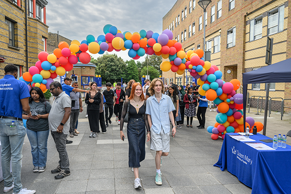
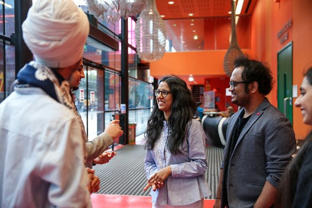
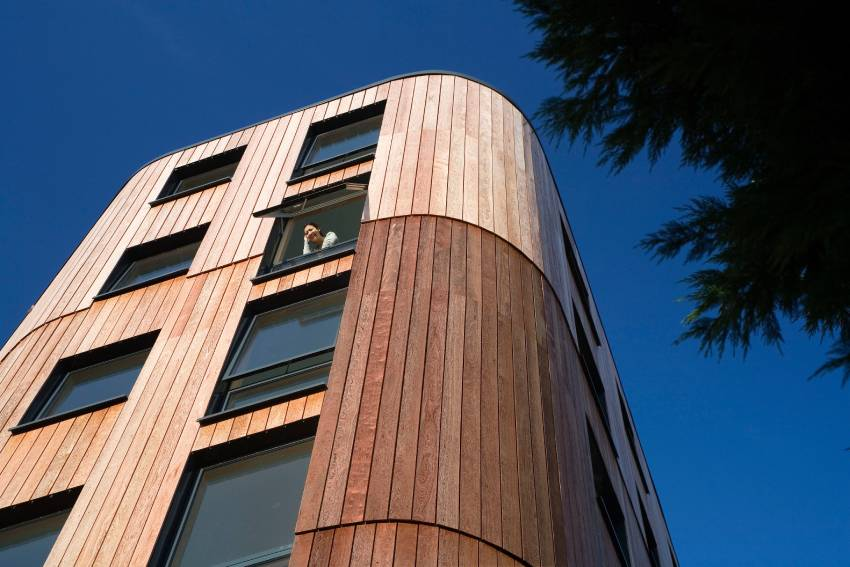

 Gender sensitivity training for businesses and educational institutions. Gender sensitivity training for businesses and educational institutionsFind out more
 Developing gender-neutral policies for workplaces and academic institutions.Developing gender-neutral policies for workplaces and academic institutions.Find out more
Advocacy for gender rights and equal opportunities. Advocacy for gender rights and equal opportunities. Find out more
Developing gender-neutral policies for workplaces and academic institutions. Developing gender-neutral policies for workplaces and academic institutions.Find out more
Content Writing & Content Marketing High-quality content is the backbone of any successful online or offline presence. Our team of experienced writers and marketers
 Research Paper Writing We offer comprehensive research paper writing services that cater to students, professionals, and academics.
Research Paper Publishing in UGC & SCOPUS Indexed Journals Publishing in reputable journals can boost your academic and professional credibility.